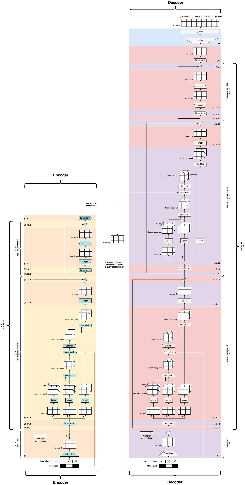

import torch
import torch.nn as nn
import torch.nn.functional as F
import math
import numpy as np
import matplotlib.pyplot as pltTransformer Code Implementation
This notebook is to practice transformer code implementation. The reference for this Mark Riedl Github repo. This notebook is a replication for practice purpose.

Import the library
Hyperparameters
d_embed = 512
num_heads = 8
num_batches = 1
vocab = 50_000
max_len = 5000
n_layers = 1
d_ff = 2048
epsilon = 1e-6Make Dummy data
x = torch.tensor([[1,2,3]]) # Input is size batch_size x sequence_length
y = torch.tensor([[1,2,3]])
x_mask = torch.tensor([[1,0,1]])
y_mask = torch.tensor([[1,0,1]])
print("x",x.size())
print("y",y.size())x torch.Size([1, 3])
y torch.Size([1, 3])Encoder
1.1 Encoder Embeddings
emb = nn.Embedding(vocab, d_embed)
# We are extracting the embeddings for the tokens from the vocabulary
# The dimensions after this operation will be batch_size x sequence_length x d_embed
x = emb(x)
# scale the embedding by sqrt(d_model) to make them bigger
x = x * math.sqrt(d_embed)
print(x.size())torch.Size([1, 3, 512])Adding positional embedding
# start with empty tensor
pe = torch.zeros(max_len, d_embed, requires_grad=False)
# array containing index values 0 to max_len
position = torch.arange(0,max_len).unsqueeze(1)
divisor = torch.exp(torch.arange(0,d_embed,2)) * -(math.log(10000.0)/d_embed)
# Make overlapping sine and cosine wave inside positional embedding tensor
pe[:,0::2] = torch.sin(position * divisor)
pe[:,1::2] = torch.cos(position * divisor)
pe = pe.unsqueeze(0)
# Add the positional embedding to the main embedding
x = x + pe[:,:x.size(1)]
print(x.size())torch.Size([1, 3, 512])1.2 Encoder Attention Layers
1.2.1.1 Set aside Residuals
x_residual = x.clone()
print(x.size())torch.Size([1, 3, 512])1.2.1.2 Pre-Self Attention Layer Normalization
# Centering all the values relative to mean
# W and b are hyperparameters which needs tuning
mean = x.mean(-1,keepdim=True)
std = x.std(-1,keepdim=True)
W1 = nn.Parameter(torch.ones(d_embed))
b1 = nn.Parameter(torch.zeros(d_embed))
x = W1 * (x - mean) / (std + epsilon) + b1
print(x.size())torch.Size([1, 3, 512])1.2.1.3 Self-Attention
Self-attention is a process of generating scores that indicate how each token is to every other token. So we would expect a seq_length x seg_length matrix of values between 0 and 1, each indicating the importance of the i-th token to the j-th token.
The input to self-attention is batch_size x sequence_length x embedding_size matrix.
Self-attention copies the input x , three tiles and calls them query(q), key(k) and values(v). Each of these matrices go through a linear layer. The marix learns to make scores in the linear layersa. It makes each matrix different. If the networks comes up with the right, different, matrices, it will get good attention scores.
We designate chunks of each token embedding to different heads.
The q and k tensors are multiplied together. This creates a batch_size x num_heads x sequence_length x sequence_length matrix. Ignoring batching and heads, one can interpret this matrix as containing the raw scores where each cell computes how related the i-th token is to the j-th token (i is the row and j is the column).
Next we pass this matrix through a softmax layer. The secret to softmax is that it can act like an argmax—it can pick the best match. Softmax squishes all values along a particular dimenion into 0…1. But what it is really doing is trying to force one particular cell to have a number close to 1 and all the rest close to 0. If we multiply this softmaxed score matrix to the v matrix, we are in essence asking (for each head), which column is best for each row. Recall that rows and columns correspond to tokens. So we are asking, which token goes best with every other token. Again, if the earlier linear layers get their parameters right, this multiplication will make good choices and loss will improve.
At this point we can think of the softmaxed scores multiplied against v as tryinng to zero out everything but the most relevant token embedding (several because of multiple heads). The result, which we will store back in x for consistency is mainly the most-attended token embedding (several because of multiple heads) plus a little bit of every other embedded token sprinkled in because we can’t do an actual argmax—the best we can do is get everything irrelevant to be close to zero so it doesn’t impact anything else.
This multiplication of the scores against the v matrix is what we refer to as self-attention. It is essentially a dot-product with an underlying learned scoring function. It basically tells us where we should look for good information. The Decoder will use this later.
# Make three versions of x for the query, key and values
k = x
q = x
v = x
# Make three linear layers
# This is where the network learns to make scores
linear_k = nn.Linear(d_embed, d_embed)
linear_q = nn.Linear(d_embed, d_embed)
linear_v = nn.Linear(d_embed, d_embed)
# We are going to fold the embedding dimensions and treat each fold as an attention head
d_k = d_embed // num_heads
# Pass q, k, v through their linear layers
q = linear_q(q)
k = linear_k(k)
v = linear_v(v)
# Do the fold, treating each h dimensions as a head
# Put the head in the second position
q = q.view(num_batches, -1, num_heads, d_k).transpose(1,2)
k = k.view(num_batches, -1, num_heads, d_k).transpose(1,2)
v = v.view(num_batches, -1, num_heads, d_k).transpose(1,2)
print("q",q.size())
print("k",k.size())
print("v",v.size())q torch.Size([1, 8, 3, 64])
k torch.Size([1, 8, 3, 64])
v torch.Size([1, 8, 3, 64])To produce the attention scores we multiply q and k (and normalize). We need to apply the mask so masked tokens don’t attend to themselves. Apply softmax to emulate argmax (good stuff close to 1 irrelevant stuff close to 0). You won’t see this happen if you look at attn because the linear layers aren’t trained yet. The attention scores are finally applied to v.
d_k = q.size(-1)
# compute the scores by multiplying k and q (and normalize)
scores = torch.matmul(k,q.transpose(-2,-1)) / math.sqrt(d_k)
# Mask out the scores
scores = scores.masked_fill(x_mask == 0, -epsilon)
# Softmax the scores, ideally creating one score close to 1 and the rest close to 0
# (Note: this won't happen if you look at the numbers because the linear layers haven't
# learned anything yet.)
attn = F.softmax(scores,dim = -1)
print("attention",attn.size())
# Apply the scores to v
x = torch.matmul(attn,v)
print("x",x.size())attention torch.Size([1, 8, 3, 3])
x torch.Size([1, 8, 3, 64])# Recombine the multiple attention heads (unfold)
x = x.transpose(1,2).contiguous().view(num_batches, -1, num_heads * (d_embed // num_heads))
print("x",x.size())x torch.Size([1, 3, 512])1.2.1.4 Post Self-attention Feed forward
ff = nn.Linear(d_embed, d_embed)
x = ff(x)
print(x.size())torch.Size([1, 3, 512])1.2.1.5 Add residual back
# Adding the residual - This is changing the original embedding values for each token by some delta up or down
x = x_residual + x
print(x.size())torch.Size([1, 3, 512])1.2.2 Feed Forward Module
The output of this layer is a stack of hidden states, one for each token. The decoder will be able to look back and attend to the hidden state that will be most useful for decoding by looking just at this stack. To move the matrix toward a hidden state we expand the embeddings, giving the network some capacity, and then collapse it down again to force it to make trade-offs.
1.2.2.1 Set aside residual
x_residual = x.clone()
print(x.size())torch.Size([1, 3, 512])1.2.2.2 Pre-Feed_Forward Layer Normalization
mean = x.mean(-1,keepdim=True)
std = x.std(-1,keepdim=True)
W2 = nn.Parameter(torch.ones(d_embed))
b2 = nn.Parameter(torch.zeros(d_embed))
x = W2 * (x - mean) / (std + epsilon) + b2
print(x.size())torch.Size([1, 3, 512])1.2.2.2 Pre-Feed Forward Layer Normalization
# The embeddings is grown and compressed again. This is part of process of transforming the outputs of the self-attention module into a hidden state encoding.
linear_expand = nn.Linear(d_embed, d_ff)
linear_compress = nn.Linear(d_ff, d_embed)
x = linear_compress(F.relu(linear_expand(x)))
print(x.size())torch.Size([1, 3, 512])##### 1.1.2.4 Add residual block back
x = x_residual + x
print(x.size())torch.Size([1, 3, 512])1.3 Final Encoder layer Normalization
# After repeating the self-attention and feed forward sub-layers for N times, we apply one last layer normalization
mean = x.mean(-1, keepdim=True)
std = x.std(-1, keepdim=True)
Wn = nn.Parameter(torch.ones(d_embed))
bn = nn.Parameter(torch.zeros(d_embed))
x = Wn * (x - mean) / (std + epsilon) + bn
print(x.size())torch.Size([1, 3, 512])At this point, we should have a matrix, stored in x that we can interpret as a stack of hidden states. The Decoder will attempt to attend to this stack and pick out (via softmax emulating argmax) the hidden state that is most helpful in guessing the work that goes in the masked position.
# The output is the hidden state
hidden = x
print(hidden.size())torch.Size([1, 3, 512])Decoder
2.1 Decoder Embeddings
emb_d = nn.Embedding(vocab, d_embed)
y = emb_d(y) * math.sqrt(d_embed)
print(y.size())torch.Size([1, 3, 512])pe = torch.zeros(max_len,d_embed, requires_grad = False)
position = torch.arange(0, max_len).unsqueeze(1)
divisor = torch.exp(torch.arange(0, d_embed, 2) * -(math.log(10000.0) / d_embed))
pe[:,0::2] = torch.sin(position * divisor)
pe[:,1::2] = torch.cos(position * divisor)
pe = pe.unsqueeze(0)
y = y + pe[:, :y.size(1)]
print(y.size())torch.Size([1, 3, 512])2.2 Decoder Attention Layers
2.2.1 Self-attention sub-layer
2.2.1.1 set aside residual
y_residual = y.clone()
print(y.size())torch.Size([1, 3, 512])2.2.1.2 Pre-self attention Layer Normalization
mean = y.mean(-1, keepdim=True)
std = y.std(-1, keepdim=True)
W1_d = nn.Parameter(torch.ones(d_embed))
b1_d = nn.Parameter(torch.zeros(d_embed))
y = W1_d * (y - mean) / (std + epsilon) + b1_d
print(y.size())torch.Size([1, 3, 512])2.2.1.3 Self-Attention
k = y
q = y
v = y
linear_q_self = nn.Linear(d_embed, d_embed)
linear_k_self = nn.Linear(d_embed, d_embed)
linear_v_self = nn.Linear(d_embed, d_embed)
d_k = d_embed // num_heads
q = linear_q_self(q)
k = linear_k_self(k)
v = linear_k_self(v)
q = q.view(num_batches, -1, num_heads, d_k).transpose(1,2)
k = k.view(num_batches, -1, num_heads, d_k).transpose(1,2)
v = v.view(num_batches, -1, num_heads, d_k).transpose(1,2)
print("q",q.size())
print("k",k.size())
print("v",v.size())q torch.Size([1, 8, 3, 64])
k torch.Size([1, 8, 3, 64])
v torch.Size([1, 8, 3, 64])d_k = q.size(-1)
scores = torch.matmul(k,q.transpose(-2,-1)) / math.sqrt(d_k)
scores = scores.masked_fill(y_mask == 0, -epsilon)
attn = F.softmax(scores, dim=-1)
print("attention",attn.size())
y = torch.matmul(attn, v)
print("y",y.size())attention torch.Size([1, 8, 3, 3])
y torch.Size([1, 8, 3, 64])# Assemble heads
y = y.transpose(1,2).contiguous().view(num_batches,-1,num_heads * (d_embed // num_heads))
print(y.size())torch.Size([1, 3, 512])2.2.1.4 Post-Self-Attention Feed Forward
ff_d1 = nn.Linear(d_embed, d_embed)
y = ff_d1(y)
print(y.size())torch.Size([1, 3, 512])##### 2.2.1.5 Add Residual back
y = y_residual + y
print(y.size())torch.Size([1, 3, 512])2.2.2 Source-Attention sub-layer
2.2.2.1 Set residual aside
y_residual = y.clone()
print(y.size())torch.Size([1, 3, 512])2.2.2.2 Pre-Source-Attention Layer Normalization
mean = y.mean(-1, keepdim = True)
std = y.std(-1, keepdim = True)
W2_d = nn.Parameter(torch.ones(d_embed))
b2_d = nn.Parameter(torch.ones(d_embed))
y = W2_d * (y - mean) / (std + epsilon) + b2_d
print(y.size())torch.Size([1, 3, 512])2.2.2.3 source Attention
Source attention works just like self-attention, except we compute the scores using keys and values from the encoder and apply it to the query from the decoder. That is, based on what the encoder thinks we should attend to, what part of the decoder sequence should we actually attend to.
q = y
k = x # we are using x
v = x # we are using x
linear_q_source = nn.Linear(d_embed,d_embed)
linear_k_source = nn.Linear(d_embed,d_embed)
linear_v_source = nn.Linear(d_embed,d_embed)
d_k = d_embed // num_heads
q = linear_q(q)
k = linear_k(k)
v = linear_v(v)
q = q.view(num_batches, -1, num_heads, d_k).transpose(1,2)
v = v.view(num_batches, -1, num_heads, d_k).transpose(1,2)
k = k.view(num_batches, -1, num_heads, d_k).transpose(1,2)
print("q",q.size())
print("k",k.size())
print("v",v.size())q torch.Size([1, 8, 3, 64])
k torch.Size([1, 8, 3, 64])
v torch.Size([1, 8, 3, 64])d_k = q.size(-1)
scores = torch.matmul(k,q.transpose(-2,-1)) / math.sqrt(d_k)
attn = F.softmax(scores, dim=-1)
y = torch.matmul(attn,v)
print("y",y.size())y torch.Size([1, 8, 3, 64])# Assemble heads
y = y.transpose(1,2).contiguous().view(num_batches, -1, num_heads * (d_embed // num_heads))
print(y.size())torch.Size([1, 3, 512])2.2.2.4 POst-Source-Attention Feed Forward
ff_d2 = nn.Linear(d_embed,d_embed)
y = ff_d2(y)
print(y.size())torch.Size([1, 3, 512])2.2.2.5 Add residual back
y = y_residual + y
print(y.size())torch.Size([1, 3, 512])2.2.3 Feed Forward Sub-Layer
2.2.3.1 set aside residual
y_residual = y.clone()
print(y.size())torch.Size([1, 3, 512])2.2.3.2 Pre-Feed-Forward Layer Normalization
mean = y.mean(-1, keepdim=True)
std = y.std(-1, keepdim=True)
W3_d = nn.Parameter(torch.ones(d_embed))
b3_d = nn.Parameter(torch.zeros(d_embed))
y = W3_d * (y - mean) / (std + epsilon) + b3_d
print(y.size())torch.Size([1, 3, 512])2.2.3.3 Feed Forward
linear_expand_d = nn.Linear(d_embed, d_ff)
linear_compress_d = nn.Linear(d_ff, d_embed)
y = linear_compress_d(F.relu(linear_expand_d(y)))
print(y.size())torch.Size([1, 3, 512])2.2.3.4 Add residual back
y = y_residual + y
print(y.size())torch.Size([1, 3, 512])2.3 Final Decoder layer Normalization
mean = y.mean(-1, keepdim=True)
std = y.std(-1, keepdim=True)
Wn_d = nn.Parameter(torch.ones(d_embed))
bn_d = nn.Parameter(torch.zeros(d_embed))
y = Wn_d * (y - mean) / (std + epsilon) + bn_d
print(y.size())torch.Size([1, 3, 512])3. Generate Probability Distribution
This next module sits on top of the decoder and expands the decoder output into a log probability distribution over the vocabulary for each token position. This is done for all tokens, though the only ones that will matter for loss computation are the ones that are masked.
linear_scores = nn.Linear(d_embed, vocab)
probs = F.log_softmax(linear_scores(y), dim=-1)
print(probs.size())torch.Size([1, 3, 50000])